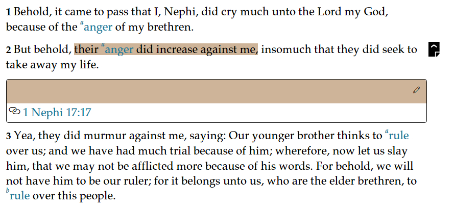
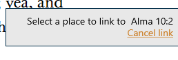

How Do I Use Links - Silent Video
How Do I Use Links - Silent Video How Do I Use Links - Silent Video
Links are custom cross references that help you get to related content quickly and easily. A link connects a first passage to a related second passage. Links appear inline below both the first passage and the second passage. Links can be either visible or hidden.
Links can be created between passages from any of the text contents of GLW. Links cannot be added to notes and journal entries.
Only one link can be created at a time, but one passage may be attached to several different passages.
Start by highlighting the first passage to be linked.
There are two ways to access the link icon ( ) to initiate the link to the first passage.
) to initiate the link to the first passage.
The first way is to click on the Annotation Bubble ( ) which appears with the highlight and then click on the link button ( Link) in the Context Menu.
) which appears with the highlight and then click on the link button ( Link) in the Context Menu.

The second way is to click the Annotate tab at the top of the screen. Then click on the Link icon() which appears on the Annotation Ribbon.
After you click the Link button, a box will appear in the lower right corner with instruction to complete the link by navigating to the second passage, and an option to cancel the link.
Once the link is initiated using one of the above methods, navigate to the second passage and highlight it. One way to navigate is to click the Home button at the top left to open the Home screen. Then navigate to the second passage (Chapter 1, “How Do I Get Around?”, describes other ways of locating specific text).
Highlight the content and click the the Annotation Bubble (). The option to complete the link (e.g. "Link from 2 Nephi 2:25") will show up in both the Annotation ribbon and the Context Menu.
Once the link is completed a box containing the link will appear inline beneath both the first passage location and the second passage location. You can return to the first passage by clicking on the reference that appears in the text of the second passage.
A View/Hide icon ( ) will appear right of the first line of the highlighted passage. Click this icon to select “View” or “Hide” the link.
) will appear right of the first line of the highlighted passage. Click this icon to select “View” or “Hide” the link.
Links can be managed using by selecting the 'Notes' button on the navigation bar at the left of the screen and then choosing the Links tab ( Links).
The number of entries is shown in parenthesis to the right of the 'search' box. The functions of the five controls are listed in the table below.
| Filter | The highlights are listed by either the color used or the book they came from. The desired color or book is selected from a pull-down menu. |
| Sort by | The highlights may be sorted by 'newest to oldest' or 'oldest to newest' |
| Search | Allows the entry of a search string. Press the 'search' icon to begin the search. |
| Details | Lists the number of both synced and unsynced annotations by each annotation type. |
| Sync | Synchronizes the local annotations with the annotations stored on the network. |